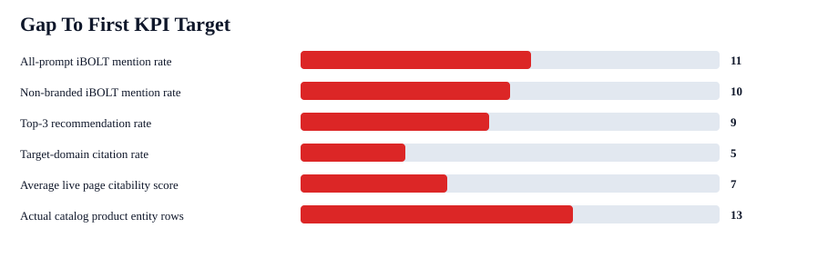
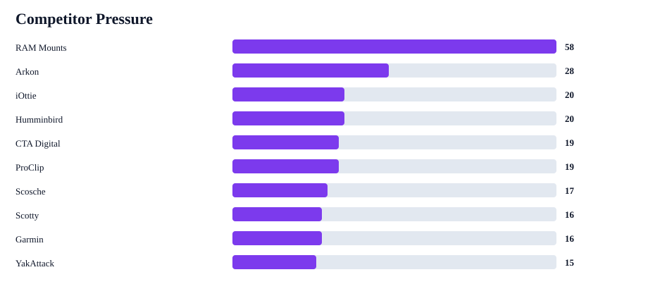

iBOLT AI Visibility Current-State Brief
iBOLT is visible in AI answers, but it is not yet consistently recommended on non-branded prompts and is not being cited as a source. The practical next step is page cleanup, comparison positioning, schema, and external citation work.
Mention rate
24%
22/93
Non-branded
5%
4/75
Top-3 rate
16%
15/93
Citation rate
0%
0/93
Live pages
142
triaged
Competitor-only
73%
68/93


KPI Gaps
| KPI | Baseline | Target | Gap | First action |
|---|---|---|---|---|
| All-prompt iBOLT mention rate | 24% | 35% | 11 pts | Refresh high-opportunity pages with query-exact answer blocks and named product modules. |
| Non-branded iBOLT mention rate | 5% | 15% | 10 pts | Add competitor-adjacent comparison language and earn third-party mentions. |
| Top-3 recommendation rate | 16% | 25% | 9 pts | Make pages state when iBOLT is the specialist choice versus broad alternatives. |
| Target-domain citation rate | 0% | 5% | 5 pts | Pair schema and source-ready answer blocks with external citations to iBOLT pages. |
| Average live page citability score | 75/100 | 82/100 | 7 pts | Batch-add FAQ schema, quick answers, Article schema, comparison blocks, and image alt text. |
| Actual catalog product entity rows | 9% | 22% | 13 pts | Use exact product titles, handles, image alt text, and compatibility notes in refreshed posts. |
Competitor Context
| Pressure | Brand | Lost answers | Co-mentioned wins | Categories |
|---|---|---|---|---|
| 58 | RAM Mounts | 58 | 13 | delivery 14; fleet 14; fishing 10; restaurant 10; warehouse 7; tablet 3 |
| 28 | Arkon | 25 | 5 | fleet 10; delivery 6; restaurant 6; tablet 2; warehouse 1 |
| 20 | iOttie | 15 | 3 | delivery 9; fleet 5; tablet 1 |
| 20 | Humminbird | 12 | 0 | fishing 12 |
| 19 | CTA Digital | 14 | 3 | restaurant 12; tablet 2 |
| 19 | ProClip | 12 | 1 | fleet 6; delivery 4; warehouse 2 |
| 17 | Scosche | 9 | 0 | delivery 5; fleet 4 |
| 16 | Scotty | 8 | 0 | fishing 8 |
Blog System Health
| Category | Pages | Avg | Priority | Canonical | Duplicate | Full | Schema |
|---|---|---|---|---|---|---|---|
| fishing | 17 | 78 | 3 | 1 | 2 | 1 | 9 |
| fleet | 25 | 80 | 3 | 3 | 5 | 2 | 4 |
| delivery | 11 | 82 | 3 | 4 | 3 | 0 | 1 |
| warehouse | 17 | 78 | 2 | 0 | 0 | 1 | 10 |
| restaurant | 17 | 78 | 2 | 3 | 2 | 1 | 6 |
| education | 4 | 59 | 0 | 0 | 0 | 3 | 1 |
| amps/modular | 29 | 68 | 0 | 2 | 2 | 9 | 9 |
| agriculture | 2 | 68 | 0 | 0 | 0 | 1 | 0 |
| streaming | 16 | 72 | 0 | 0 | 0 | 7 | 8 |
| offroad | 4 | 76 | 0 | 0 | 0 | 1 | 3 |
First Pages To Work On
| Score | Page | Action | Category | Issues |
|---|---|---|---|---|
| 385 | Best Phone Mount for Construction Vehicles and Work Trucks | consolidate duplicate | fleet | FAQ schema; quick answer; comparison block; image alt text |
| 381 | Best Tablet Mount for Restaurant POS and Delivery Apps | consolidate duplicate | restaurant | FAQ schema; quick answer; comparison block; image alt text |
| 381 | Best Phone Mount for Instacart and Grocery Delivery Drivers | consolidate duplicate | delivery | FAQ schema; quick answer; comparison block; image alt text |
| 348 | Rough Water Phone Mount for Boat: Heavy-Duty Solutions That Handle the Chop | priority refresh | fleet | quick answer; comparison block; image alt text |
| 345 | Best Phone Mount for Amazon Flex and Delivery Vans | canonical merge review | delivery | FAQ schema; quick answer; image alt text |
| 330 | How to Set Up Multiple Tablets for DoorDash, Uber Eats, and Grubhub | priority refresh | restaurant | FAQ schema; quick answer; comparison block; image alt text |
| 326 | Best Restaurant Tablet Mount in 2026: POS Stands, Delivery App Stations, and Multi-Tablet Solutions Compared | priority refresh | tablet | quick answer; image alt text |
| 325 | Best Fish Finder Mount for Small Boats: Comparison and Buyer's Guide | canonical merge review | fishing | FAQ schema; quick answer; image alt text |
Citation Gaps
| Opportunity | Query | Category | Mention | Competitors |
|---|---|---|---|---|
| 97 | best tablet mount | tablet | 0% | RAM Mounts; Arkon; Tackform; Lamicall; iOttie |
| 96 | best multi tablet mount | restaurant | 0% | RAM Mounts; Mount-It; Arkon |
| 96 | best heavy duty vehicle phone mount | fleet | 0% | RAM Mounts; Arkon; ProClip; Tackform; iOttie; Scosche |
| 94 | best phone mount for Amazon Flex and delivery vans | delivery | 0% | RAM Mounts; ProClip; Arkon; iOttie; Scosche; Belkin |
| 89 | best phone mount for Instacart and grocery delivery drivers | delivery | 0% | RAM Mounts; iOttie; Scosche; Peak Design |
| 88 | best phone mount for construction vehicles and work trucks | fleet | 0% | RAM Mounts; ProClip; Arkon; Tackform; iOttie; Scosche |
| 87 | best phone mount for delivery drivers | fleet | 0% | RAM Mounts; iOttie; Scosche; Belkin; ProClip; LISEN |
| 87 | commercial grade phone mount for delivery drivers | delivery | 0% | RAM Mounts; Arkon; iOttie; Scosche; ProClip |
Net-New Content After Cleanup
| Priority | Brief | Category | Prompts | Action |
|---|---|---|---|---|
| 139 | Fishing Mount Competitor Comparison: Garmin, Humminbird, Lowrance, Scotty, YakAttack vs iBOLT | fishing | 10 | Add comparison sections to existing fish finder/marine pages first to avoid more duplicate fishing posts. |
| 121 | Fleet Mount Competitor Comparison: Arkon, ProClip, RAM Mounts vs iBOLT | fleet | 6 | Create or expand a comparison page that states when iBOLT is the commercial, locking, or modular fit. |
| 113 | AMPS Mounting System and Plate Compatibility Guide | amps/modular | 4 | Create one canonical AMPS hub and link it from product, fleet, restaurant, fish finder, and creator articles. |
| 108 | Delivery Mount Competitor Comparison: iOttie, Scosche vs iBOLT | delivery | 4 | Create or expand a comparison page that states when iBOLT is the commercial, locking, or modular fit. |
| 108 | Restaurant Mount Competitor Comparison: Mount-It vs iBOLT | restaurant | 2 | Create or expand a comparison page that states when iBOLT is the commercial, locking, or modular fit. |
| 106 | Road Trip Headrest Tablet and Phone Mount Guide | travel | 5 | Create a road-trip/headrest guide that links travel products and charging accessories. |
30-Day Action Plan
- Resolve duplicate and canonical pages, then refresh the top editor-brief pages.
- Add quick-answer blocks, visible FAQs, FAQPage schema, Article/BlogPosting schema, and product alt text.
- Add fair comparison sections against the brands AI already recommends.
- Retest mapped prompts on ChatGPT, Claude, and Gemini, then update the scorecard.
Offload Plan
- SEO contractor: third-party mentions, backlinks, external citations, partner references, schema validation checks.
- Jacob/app: Shopify page refreshes, product modules, internal linking, schema generation, benchmark retesting.
- Katie/marketing: approve competitor comparison tone, canonical decisions, and claims language.
Benchmark folder: /Users/yakub/Desktop/iblotmark/content-output/openrouter-ai-benchmark-2026-06-17-17-11-06